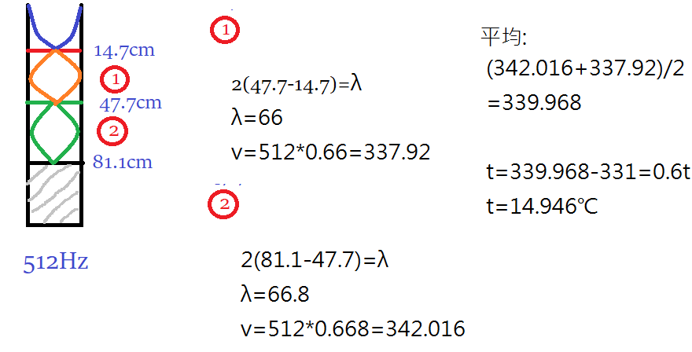
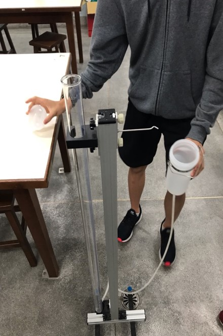

共鳴管實驗
實驗器材:
1.蓄水器 2.連通管
3.支架 4.透明管
5.橡皮圈
實驗目的:
由空氣柱的共鳴現象，測定聲波在空氣中傳播的速率。
實驗原理:
(一)對於所有的波動 v = f λ
(二)聲速:v = 331 + 0.6t (m/s) [ t = ℃ ]
(三)空氣柱長度與駐波的關係 : L = nλ/4 , n=1,2,3...
實驗步驟:
(一)套數條橡皮筋於玻璃管上，用以作為水面高度的記號。
(二)用橡皮槌敲擊音叉，使其震動。
(三)取音叉F靠近R管口，保持音叉的震動方向與管口平行，並保持距離管口約2cm。(如下圖)
(四)將蓄水器慢慢下降，使共鳴管長漸漸增加，以找到一聲音極大時的位置為基準，在此位置附近
緩慢的升降水面高度數次，用以找到準確的共鳴位置，用橡皮圈做記號。
(五)再將水面高度降低，以找到其他共鳴點。
(六)量測波節間的距離。
(七)以不同頻率的音叉重複上述實驗，並記錄當時溫度。
(八)利用v = f λ求出聲速，並與理論值比較。
※第一次共鳴的長度非波長的1/4，(管口非真正腹點)，真正腹點約在管口上方1cm。
實驗數據及圖片:

